소방설비기사(전기분야) (2018-03-04 기출문제)
1과목: 소방원론
1. pH9 정도의 물을 보호액으로 하여 보호액 속에 저장하는 물질은?
- 나트륨
- 탄화칼슘
- 칼륨
- 황린
(정답률: 87%)

2. 고분자 재료와 열적 특성의 연결이 옳은 것은?(오류 신고가 접수된 문제입니다. 반드시 정답과 해설을 확인하시기 바랍니다.)
- 풀리염화비닐 수지 - 열가소성
- 페놀 수지 - 열가소성
- 폴리에틸렌 수지 - 열경화성
- 멜라민 수진 - 열가소성
(정답률: 62%)
3. 소화약제로 물을 사용하는 주된 이유는?
- 촉매역할을 하기 떄문에
- 증발잠열이 크기 때문에
- 연소작용을 하기 때문에
- 제거작용을 하기 때문에
(정답률: 91%)
4. 대두유가 침적된 기름 걸레를 쓰레기통에 장시간 방치한 결과 자연발화에 의하여 화재가발생한 경우 그 이유로 옳은 것은?
- 분해열 축적
- 산화열 축적
- 흡착열 축적
- 발효열 축적
(정답률: 85%)
5. 다음 그림에서 목조 건물의 표준 화재 온도 시간 곡선으로 옳은 것은?
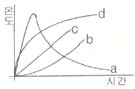
- a
- b
- c
- d
(정답률: 86%)
6. 포소화약제가 갖추어야 할 조건이 아닌 것은?
- 부착성이 있을 것
- 유동성과 내열성이 있을 것
- 응집성과 안정성이 있을 것
- 소포성이 있고 기화가 용이할 것
(정답률: 74%)
7. 탄화칼슘이 물과 반응 시 발생하는 가연성 가스는?
- 메탄
- 포스핀
- 아세틸렌
- 수소
(정답률: 79%)
8. 건축물의 바깥쪽에 설치하는 피난계단의 구조 기준 중 계단의 유효너비는 몇 m 이상으로 하여야 하는가?
- 0.6
- 0.7
- 0.8
- 0.9
(정답률: 62%)
9. 0℃, latm 상태에서 부탄(C4H10)1 mol을 완전연소 시키기 위해 필요한 산소의 mol 수는?
- 2
- 4
- 5.5
- 6.5
(정답률: 55%)
10. 상온, 상압에서 액체인 물질은?
- CO2
- Halon 1301
- Halon 1211
- Halon 2402
(정답률: 78%)
11. MOC(Minimum Oxygen Concentration : 최소 산소 농도)가 가장 작은 물질은?
- 메탄
- 에탄
- 프로판
- 부탄
(정답률: 64%)
12. 분진폭발의 위험성이 가장 낮은 것은?
- 알루미늄분
- 유황
- 팽창질석
- 소맥분
(정답률: 84%)
13. 소화의 방법으로 틀린 것은?
- 가연성 물질을 제거한다.
- 불연성 가스의 공기 중 농도를 높인다.
- 산소의 공급을 원활히 한다.
- 가연성 물질을 냉각시킨다.
(정답률: 88%)
14. 수성막포 소화약제의 특성에 대한 설명으로 틀린 것은?
- 내열성이 우수하여 고온에서 수성막의 형성이 용이하다.
- 기름에 의한 오염이 적다.
- 다른 소화약제와 병용하여 사용이 가능하다.
- 불소계 계면활성제가 주성분이다.
(정답률: 51%)
15. 1기압상태에서, 100℃ 물 1g이 모두 기체로 변할 떄 필요한 열량은 몇 cal 인가?
- 429
- 499
- 539
- 639
(정답률: 88%)
16. 다음 중 발화점이 가장 낮은 물질은?
- 휘발유
- 이황화탄소
- 적린
- 황린
(정답률: 47%)
17. 위험물안전관리법령에서 정하는 위험물의 한계에 대한 정의로 틀린 것은?
- 유황은 순도가 60 중량퍼센트 이상인 것
- 인화성고체는 고형알코올 그 밖에 1기압에서 인화점이 섭씨 40도 미만인 고체
- 과산화수소는 그 농도가 35 중량퍼센트 이상인 것
- 제1석유류는 아세톤, 휘발유 그 밖에 1기압에서 인화점이 섭씨 21도 미만인것
(정답률: 66%)
18. 건축물 내 방화벽에 설치하는 출입문의 너비 및 높이의 기준은 각각 몇 m 이하인가?
- 2.5
- 3.0
- 3.5
- 4.0
(정답률: 86%)
19. Fourier법칙(전도)에 대한 설명으로 틀린 것은?
- 이동열량은 전열체의 단면적에 비례한다.
- 이동열량은 전열체의 두께에 비례한다.
- 이동열량은 전열체의 열전도도에 비례한다.
- 이동열량은 전열체 내ㆍ외부의 온도차에 비례한다.
(정답률: 70%)
20. 다음의 가연성 물질 중 위험도가 가장 높은 것은?
- 수소
- 에틸렌
- 아세틸렌
- 이황화탄소
(정답률: 49%)
2과목: 소방전기회로
21. 다음과 같은 결합회로의 합성인덕턴스로 옳은 것은?
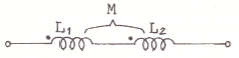
- L1+L2+2M
- L1+L2-2M
- L1+L2-M
- L1+L2+M
(정답률: 76%)
22. 그림과 같이 전압계 V1, V2, V3와 5Ω의 저항 R을 접속하였다. 전압계의 지시가 V1=20V, V2=40V, V3=50V라면 부하전력은 몇W인가?
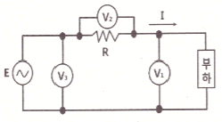
- 50
- 100
- 150
- 200
(정답률: 63%)
23. 권선수가 100회인 코일을 200회로 늘리면 코일에 유기되는 유도기전력은 어떻게 변화 하는가?
- 1/2로 감소
- 1/4로 감소
- 2배로 증가
- 4배로 증가
(정답률: 59%)
24. 회로의 전압과 전류를 측정하기 위한 계측기의 연결방법으로 옳은 것은?
- 전압계:부하와 직렬, 전류계:부하와 병렬
- 전압계:부하와 직렬, 전류계:부하와 직렬
- 전압계:부하와 병렬, 전류계:부하와 병렬
- 전압계:부하와 병렬, 전류계:부하와 직렬
(정답률: 71%)
25. 3상유도전동기 Y-△ 기동회로의 제어요소가 아닌 것은?
- MCCB
- THR
- MC
- ZCT
(정답률: 75%)
26. 제어동작에 따른 제어계의 분류에 대한 설명 중 틀린 것은?
- 미분동작 : D동작 또는 rate동작이라고 부르며, 동작신호의 기울기에 비례한 조작신호를 만든다.
- 적분동작 : I동작 또는 리셋동작이라고 부르며, 적분값의 크기에 비례하여 조절신호를 만든다.
- 2위치제어 : on/off 동작이라고도 하며, 제어량이 목표값 보다 작은지 큰지에 따라 조작량으로 on 또는 off의 두가지 값의 조절 신호를 발생한다.
- 비례동작 : P동작이라고도 부르며, 제어동작신호에 반비례하는 조절신호를 만드는 제어동작이다.
(정답률: 71%)
27. 용량0.02μF 콘덴서 2개와 0.01μF 콘덴서 1개를 병렬로 접속하여 24V의 전압을 가하였다. 합성용량은 몇 μF이며, 0.01μF 콘덴서에 축적되는 전하량은 몇 C인가?
- 0.⑤, 0.12×10-6
- 0.⑤, 0.24×10-6
- 0.03, 0.12×10-6
- 0.03, 0.24×10-6
(정답률: 74%)
28. 불대수의 기본정리에 관한 설명으로 틀린 것은?
- A+A=A
- A+1=1
- Aㆍ0=1
- A+0=A
(정답률: 83%)
29. RLC 직렬공진회로에서 제n고조파의 공진주파수(fn)는?
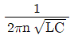
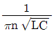
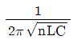
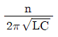
(정답률: 73%)
30. 대칭 3상 Y부하에서 각 상의 임피던스는 20Ω이고, 부하 전류가 8A일 때 부하의 선간접압은 약 몇 V 인가?
- 160
- 226
- 277
- 480
(정답률: 69%)
31. R=10Ω, wL=20Ω 인 직렬회로에 220V의 전압을 가하는 경우 전류와 전압과 전류의 위상각은 각각 어떻게 되는가?
- 24.5A, 26.5°
- 9.8A, 63.4°
- 12.2A, 13.2°
- 73.6A, 79.6°
(정답률: 75%)
32. 터널다이오드를 사용하는 목적이 아닌 것은?
- 스위칭작용
- 증폭작용
- 발진작용
- 정전압 정류작용
(정답률: 63%)
33. 집적회로(IC)의 특징으로 옳은 것은?
- 시스템이 대형화된다.
- 신뢰성이 높으나, 부품의 교체가 어렵다.
- 열에 강하다.
- 마찰에 의한 정전기 영향에 주의해야 한다.
(정답률: 60%)
34. PB-on 스위치와 병렬로 접속된 보조접점 X-a의 역할은?
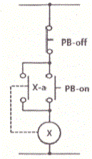
- 인터록 회로
- 자기유지회로
- 전원차단회로
- 램프점등회로
(정답률: 81%)
35. 1차 권선수 10회, 2차 권선수 300회인 변압기에서 2차 단자전압 1500V가 유도되기 위한 1차 단자전압은 몇 V 인가?
- 30
- 50
- 120
- 150
(정답률: 74%)
36. 교류에서 파형의 개략적인 모습을 알기 위해 사용하는 파고율과 파형율에 대한 설명으로 옳은 것은?
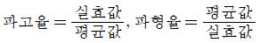
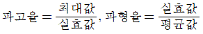
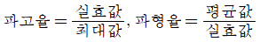
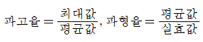
(정답률: 76%)
37. 배전선에 6000V의 전압을 가하였더니 2mA의 누설전류가 흘렀다. 이 배전선의 절연저항은 몇MΩ 인가?
- 3
- 6
- 8
- 12
(정답률: 74%)
38. 자동화재탐지설비의 수신기에서 교류 220V를 직류 24V로 정류 시 필요한 구성요소가 아닌 것은?
- 변압기
- 트랜지스터
- 정류 다이오드
- 평활 콘덴서
(정답률: 54%)
39. 다음 그림과 같은 계통의 전달함수는?
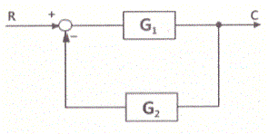
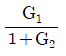
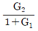
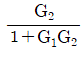
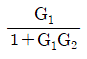
(정답률: 73%)
40. 단상 유도전동기의 Slip은 5.5[%], 회전자의 속도가 1700rpm인 경우 동기속도(NS)는?
- 3090rpm
- 9350rpm
- 1799rpm
- 1750rpm
(정답률: 64%)
3과목: 소방관계법규
41. 소방시설공사업법령상 소방시설공사 완공 검사를 위한 현장 확인 대상 특정소방대상물의 범위가 아닌 것은?
- 위락시설
- 판매시설
- 운동시설
- 창고시설
(정답률: 55%)
42. 소방기본법령상 특수가연물의 저장 및 취급의 기준 중 다음 ( )안에 알맞은 것은? (단, 석탄ㆍ목탄류를 발전용으로 저장하는 경우는 제외한다.)
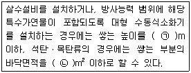
- ㉠ 10, ㉡ 50
- ㉠ 10, ㉡ 200
- ㉠ 15, ㉡ 200
- ㉠ 15, ㉡ 300
(정답률: 53%)
43. 위험물안전관리법상 시ㆍ도지사의 허가를 받지 아니하고 당해 제조소등을 설치할 수 있는 기준 중 다음 ( ) 안에 알맞은 것은?
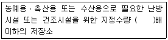
- 20
- 30
- 40
- 50
(정답률: 75%)
44. 화재예방, 소방시설 설치ㆍ유지 및 안전관리에 관한 법령상 단독경보형감지기를 설치하여야 하는 특정소방대상물의 기준 중 옳은 것은?
- 연면적 600m2 미만의 아파트등
- 연면적 1000m2 미만의 기숙사
- 연면적 1000m2 미만의 숙박시설
- 교육연구시설 또는 수련시설 내에 있는 합숙소 또는 기숙사로서 연면적 1000m2 미만인 것
(정답률: 55%)
45. 소방기본법령상 일반음식점에서 조리를 위하여 불을 사용하는 설비를 설치하는 경우 지켜야 하는 사항 중 다음 ( ) 안에 알맞은 것은?
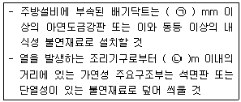
- ㉠ 0.5, ㉡ 0.15
- ㉠ 0.5, ㉡ 0.6
- ㉠ 0.6, ㉡ 0.15
- ㉠ 0.6, ㉡ 0.5
(정답률: 52%)
46. 소방기본법령상 특수가연물의 품명별 수량 기준으로 틀린 것은?
- 합성수지류(발포시킨 것) : 20m3이상
- 가연성 액체류 : 2m3이상
- 넝마 및 종이부스러기 : 400kg이상
- 볏짚류 : 1000kg이상
(정답률: 74%)
47. 화재예방, 소방시설 설치ㆍ유지 및 안전관리에 관한 법령상 용어의 정의 중 다음 ( ) 안에 알맞은 것은?
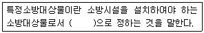
- 행정안전부령
- 국토교통부령
- 고용노동부령
- 대통령령
(정답률: 80%)
48. 소방시설공사업법상 특정소방대상물의 관계인 또는 발주자가 해당 도급계약의 수급인을 도급계약 해지할 수 있는 경우의 기준 중 틀린 것은?
- 하도급계약의 적정성 심사 결과 하수급인 또는 하도급계약 내용의 변경 요구에 정당한 사유 없이 따르지 아니하는 경우
- 정당한 사유 없이 15일 이상 소방시설공사를 계속하지 아니하는 경우
- 소방시설업이 등록취소되거나 영업정지된 경우
- 소방시설업을 휴업하거나 폐업한 경우
(정답률: 72%)
49. 위험물안전관리법령상 인화성액체위험물(이황화탄소를 제외)의 옥외탱크저장소의 탱크 주위에 설치하여야 하는 방유제의 설치 기준 중 틀린 것은?
- 방유제내의 면적은 60000m2 이하로 하여야 한다.
- 방유제는 높이 0.5m 이상 3m 이하, 두께 0.2 이상, 지하매설깊이 1m 이상으로 할 것. 다만, 방유제와 옥외저장탱크 사이의 지반면 아래에 불침윤성 구조물을 설치하는 경우에는 지하매설깊이를 해당 불침윤성 구조물까지로 할 수 있다.
- 방유제의 용량은 방유제안에 설치된 탱크가 하나인 때에는 그 탱크 용량의 110% 이상, 2기 이상인 때에는 그 탱크 중 용량이 최대인 것의 용량의 110% 이상으로 하여야 한다.
- 방유제는 철근콘크리트로 하고, 방유제와 옥외저장탱크 사이의 지표면은 불연성과 불침윤성이 있는 구조(철근콘크리트 등)로 할 것. 다만, 누출된 위험물을 수용할 수 있는 전용유조 및 펌프 등의 설비를 갖춘 경우에는 방유제와 옥외저장탱크 사이의 지표면을 흙으로 할 수 있다.
(정답률: 69%)
50. 소방기본법상 시ㆍ도지사가 화재경계지구로 지정할 필요가 있는 지역을 화재경계지구로 지정하지 아니하는 경우 해당 시ㆍ도지사에게 해당 지역의 화재경계지구 지정을 요청할 수 잇는 자는?
- 행정안전부장관
- 소방청장
- 소방본부장
- 소방서장
(정답률: 63%)
51. 화재예방, 소방시설 설치ㆍ유지 및 안전관리에 관한 법상 소방안전 특별관리시설물의 대상 기준 중 틀린 것은?
- 수련시설
- 항만시설
- 전력용 및 통신용 지하구
- 지정문화재인 시설(시설이 아닌 지정문화재를 보호하거나 소장하고 있는 시설을 포함)
(정답률: 55%)
52. 소방기본법령상 소방용수시설별 설치기준 중 옳은 것은?
- 저수조는 지면으로부터의 낙차가 4.5m 이상일 것
- 소화전은 상수도와 연결하여 지하식 또는 지상식의 구조로 하고, 소방용호스와 연결하는 소화전의 연결금속구의 구경은 50mm로 할 것
- 저수조 흡수관의 투입구가 사각형의 경우에는 한 변의 길이가 60cm 이상일 것
- 급수탑 급수배관의 구경은 65mm 이상으로 하고, 개폐밸브는 지상에서 0.8m 이상, 1.5m 이하의 위치에 설치하도록 할 것
(정답률: 58%)
53. 위험물안전관리법상 업무상 과실로 제조소등에서 위험물을 유출ㆍ방출 또는 확산시켜 사람의 생명ㆍ신체 또는 재산에 대하여 위험을 발생시킨 자에 대한 벌칙 기준으로 옳은 것은?
- 10년 이하의 징역 또는 금고나 1억원 이하의 벌금
- 7년 이하의 금고 또는 7천만원 이하의 벌금
- 5년 이하의 징역 또는 1억원 이하의 벌금
- 3년 이하의 징역 또는 3천만원 이하의 벌금
(정답률: 76%)
54. 화재예방, 소방시설 설치ㆍ유지 및 안전관리에 관한 법상 중앙소방기술심의위원회의 심의사항이 아닌 것은?
- 화재안전기준에 관한 사항
- 소방시설의 설계 및 공사감리의 방법에 관한 사항
- 소방시설에 하자가 있는지의 판단에 관한 사항
- 소방시설공사의 하자를 판단하는 기준에 관한 사항
(정답률: 59%)
55. 위험물안전관리법령상 제조소의 위치ㆍ구조 및 설비의 기준 중 위험물을 취급하는 건축물 그 밖의 시설의 주위에는 그 취급하는 위험물을 최대수량이 지정수량의 10배 이하인 경우 보유하여야 할 공지의 너비는 몇 m 이상 이어야 하는가?
- 3
- 5
- 8
- 10
(정답률: 47%)
56. 화재예방, 소방시설 설치ㆍ유지 및 안전관리에 관한 법령상 종합정밀점검 실시 대상이 되는 특정소방대상물의 기준 중 다음 ( )안에 알맞은 것은?(오류 신고가 접수된 문제입니다. 반드시 정답과 해설을 확인하시기 바랍니다.)
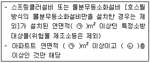
- ㉠ 2000, ㉡ 7
- ㉠ 2000, ㉡ 11
- ㉠ 5000, ㉡ 7
- ㉠ 5000, ㉡ 11
(정답률: 71%)
57. 화재예방, 소방시설 설치ㆍ유지 및 안전관리에 관한 법령상 화재안전기준을 달리 적용하여야 하는 특수한 용도 또는 구조를 가진 특정 소방 대상물인 원자력 발전소에 설치하지 아니할 수 있는 소방시설은?
- 물분무등소화설비
- 스프링쿨러설비
- 상수도소화용수설비
- 연결살수설비
(정답률: 65%)
58. 소방기본법상 소방업무의 응원에 대한 설명 중 틀린 것은?(관련 규정 개정전 문제로 여기서는 기존 정답인 4번을 누르면 정답 처리됩니다. 자세한 내용은 해설을 참고하세요.)
- 소방본부장이나 소방서장은 소방활동을 할 때에 긴급한 경우에는 이웃한 소방본부장 또는 소방서장에게 소방업무의 응원을 요청할 수 있다.
- 소방업무의 응원 요청을 받은 소방본부장 또는 소방서장은 정당한 사유 없이 그 요청을거절하여서는 아니 된다.
- 소방업무의 응원을 위하여 파견된 소방대원은 응원을 요청한 소방본부장 또는 소방서장의 지휘에 따라야 한다.
- 시ㆍ도지사는 소방업무의 응원을 요청하는 경우를 대비하여 출동 대상지역 및 규모와 필요한 경비의 부담 등에 관하여 필요한 사항을 대통령령으로 정하는 바에 따라 이웃하는 시ㆍ도지사와 협의하여 미리 규약으로 정하여야 한다.
(정답률: 78%)
59. 화재예방, 소방시설 설치ㆍ유지 및 안전관리에 관한 법령상 소방안전관리대상물의 소방안전관리자가 소방훈련 및 교육을 하지 않은 경우 1차 위반 시 과태료 금액 기준으로 옳은 것은?
- 200만원
- 100만원
- 50만원
- 30만원
(정답률: 52%)
60. 화재예방, 소방시설 설치ㆍ유지 및 안전관리에 관한 법상 공동 소방안전관리자 선임대상 특정소방대상물의 기준 중 틀린 것은?
- 판매시설 중 상점
- 고층 건축물(지하층을 제외한 층수가 11층 이상인 건축물만 해당)
- 지하가(지하의 인공구조물 안에 설치된 상점 및 사무실, 그 밖에 이와 비슷한 시설이 연속하여 지하도에 접하여 설치된 것과 그 지하도를 합한 것)
- 복합건축물로서 연면적이 5000m2이상인 것 또는 층수가 5층 이상인것
(정답률: 59%)
4과목: 소방전기시설의 구조 및 원리
61. 누전경보기를 설치하여야 하는 특정소방 대상물의 기준 중 다음 ( ) 안에 알맞은 것은? (단, 위험물 저장 및 처리 시설 중 가스시설, 지하가 중 터널 또는 지하구의 경우는 제외한다.)
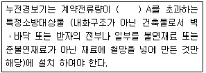
- 60
- 100
- 200
- 300
(정답률: 53%)
62. 복도통로유도등의 식별도 기준 중 다음 ( ) 안에 알맞은 것은?
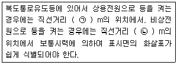
- ㉠ 15, ㉡ 20
- ㉠ 20, ㉡ 15
- ㉠ 30, ㉡ 20
- ㉠ 20, ㉡ 30
(정답률: 56%)
63. 지하층을 제외한 층수가 7층 이상으로서 연면적이 2000 m2 이상이거나 지하층의 바닥면적의 합계가 3000 m2 이상인 특정소방대상물의 비상콘센트 설비에 설치하여야 할 비상전원의 종류가 아닌 것은?
- 비상전원수전설비
- 자가발전설비
- 전기저장장치
- 축전지설비
(정답률: 56%)
64. 수신기의 구조 및 일반기능에 대한 설명 중 틀린 것은? (단, 간이형수신기는 제외한다.)
- 수신기(1회선용은 제외한다)는 2회선이 동시에 작동하여도 화재표시가 되어야 하며, 감지기의 감지 또는 발신기의 발신개시로부터 P형, P형복합식, GP형, GP형복합식, R형, R형복합식 수신기의 수신완료까지의 소요시간은 5초(축적형의 경우에는 60초)이내이어야 한다.
- 수신기의 외부배선 연결용 단자에 있어서 공통신호선용 단자는 10개 회로마다 1개 이상 설치하여야 한다.
- 화재신호를 수신하는 경우 P형, P형복합식, GP형, GP형복합식, R형, R형복합식, GR형 또는 GR형복합식의 수신기에 있어서는 2이상의 지구표시장치에 의하여 각각 화재를 표시할 수 있어야 한다.
- 정격전압이 60V를 넘는 기구의 급속제 외함에는 접지단자를 설치하여야 한다.
(정답률: 61%)
65. 비상벨설비 또는 자동식사이렌설비의 설치기준 중 틀린 것은?
- 전원은 전기가 정상적으로 공급되는 축전지, 전기저장장치 또는 교류전압의 옥내 간선으로 하고, 전원까지의 배선은 전용으로 설치하여야 한다.
- 비상벨설비 또는 자동식사이렌설비에는 그 설비에 대한 감시상태를 60분간 지속한 후 유효하게 10분 이상 경보할 수 있는 축전지 설비(수신기에 내장하는 경우를 포함) 또는 전기저장장치를 설치하여야 한다.
- 특정소방대상물의 층마다 설치하되, 해당 특정소방대상물의 각 부분으로부터 하나의 발신기까지의 수평거리가 25m 이하가 되도록 할 것. 다만, 복도 또는 별도로 구획된 실로서 보행거리가 40m 이상일 경우에는 추가로 설치하여야 한다.
- 발신기의 위치표시등은 함의 상부에 설치하되, 그 불빛은 부착 면으로부터 45° 이상의 범위 안에서 부착지점으로부터 10m 이내의 어느 곳에서도 쉽게 식별할 수 있는 적색등으로 설치하여야 한다.
(정답률: 64%)
66. 비상방송설비 음향장치의 설치기준 중 옳은 것은?
- 확성기는 각층마다 설치하되, 그 층의 각 부분으로부터 하나의 확성기까지의 수평거리가 15m 이하가 되도록 하고, 해당층의 각 부분에 유효하게 경보를 발할 수 있도록 설치할 것
- 층수가 5층 이상으로서 연면적이 3000 m2를 초과하는 특정소방대상물의 지하층에서 발화한 때에는 직상층에만 경보를 발할 것
- 음향장치는 자동화재탐지설비의 작동과 연동하여 작동할 수 있는 것으로 할 것
- 음향장치는 정격전압의 60% 전압에서 음향을 발할 수 있는 것으로 할 것
(정답률: 73%)
67. 자동화재속보설비 속보기의 기능에 대한 기준 중 틀린 것은?
- 작동신호를 수신하거나 수동으로 동작시키는 경우 30초 이내에 소방관서에 자동적으로 신호를 발하여 통보하되, 3회 이상 속보할 수 있어야 한다.
- 예비전원을 병렬로 접속하는 경우에는 역충전 방지 등의 조치를 하여야 한다.
- 연동 또는 수동으로 소방관서에 화재발생 음성정보를 속보중인 경우에도 송수화장치를 이용한 통화가 우선적으로 가능하여야 한다.
- 속보기의 송수화장치가 정상위치가 아닌 경우에도 연동 또는 수동으로 속보가 가능하여야 한다.
(정답률: 74%)
68. 피난기구 설치 개수의 기준 중 다음 ( ) 안에 알맞은 것은?
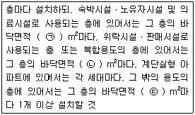
- ㉠ 300, ㉡ 500, ㉢ 1000
- ㉠ 500, ㉡ 800, ㉢ 1000
- ㉠ 300, ㉡ 500, ㉢ 1500
- ㉠ 500, ㉡ 800, ㉢ 1500
(정답률: 51%)
69. 비상조명등의 비상전원은 지하층 또는 무창층으로서 용도가 도매시장ㆍ소매시장ㆍ여객자동차터미널ㆍ지하역사 또는 지하상가인 경우 그 부분에서 피난층에 이르는 부분의 비상조명등을 몇 분 이상 유효하게 작동시킬수 있는 용량으로 하여야 하는가?
- 10
- 20
- 30
- 60
(정답률: 67%)
70. 무선통신보조설비를 설치하지 아니할 수 있는 기준 중 다음 ( ) 안에 알맞은 것은?
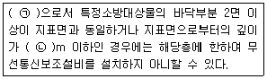
- ㉠ 지하층, ㉡ 1
- ㉠ 지하층, ㉡ 2
- ㉠ 무창층, ㉡ 1
- ㉠ 무창층, ㉡ 2
(정답률: 72%)
71. 일시적으로 발생한 열ㆍ연기 또는 먼지 등으로 인하여 화재신호를 발신할 우려가 있는 장소의 설치장소별 감지기 적응성 기준 중 항공기 격납고, 높은 천장의 창고 등 감지기 부착 높이가 8m 이상의 장소에 적응성을 갖는 감지기가 아닌 것은? (단, 연기감지기를 설치할 수 있는 장소이며, 설치장소는 넓은 공간으로 천장이 높아 열 및 연기가 확산하는 환경상태이다.)
- 광전식 스포트형 감지기
- 차동식 분포형 감지기
- 광전식 분리형 감지기
- 불꽃감지기
(정답률: 53%)
72. 비상벨설비 음향장치의 음량은 부착된 음향장치의 중심으로부터 1m 떨어진 위치에서 몇 dB 이상이 되는 것으로 하여야 하는가?
- 90
- 80
- 70
- 60
(정답률: 79%)
73. 소방대상물의 설치장소별 피난기구의 적응성 기준 중 다음 ( ) 안에 알맞은 것은?(관련 규정 개정전 문제로 여기서는 기존 정답인 1번을 누르면 정답 처리됩니다. 자세한 내용은 해설을 참고하세요.)
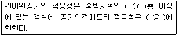
- ㉠ 3, ㉡ 공동주택
- ㉠ 4, ㉡ 공동주택
- ㉠ 3, ㉡ 단독주택
- ㉠ 4, ㉡ 단독주택
(정답률: 60%)
74. 승강식피난기 및 하향식 피난구용 내림식 사다리의 설치기준 중 틀린 것은?(관련 규정 개정전 문제로 여기서는 기존 정답인 2번을 누르면 정답 처리됩니다. 자세한 내용은 해설을 참고하세요.)
- 착지점과 하강구는 상호 수평거리 15cm 이상의 간격을 두어야 한다.
- 대피실 출입문이 개방되거나, 피난기구 작동시 해당층 및 직상층 거실에 설치된 표시등 및 경보장치가 작동되고, 잠시 제어반에서는 피난기구의 작동을 확인 할 수 있어야 한다.
- 하강구 내측에는 기구의 연결 금속구 등이 없어야 하며 전개된 피난기구는 하강구 수평투영면적 공간 내의 범위를 침범하지 않는 구조이어야 할 것. 단, 직경 60cm 크기의 범위를 벗어난 경우이거나, 직하층의 바닥 면으로부터 높이 50cm 이하의 범위는 제외한다.
- 대피실 내에는 비상조명등을 설치하여야 한다.
(정답률: 53%)
75. 비상콘센트설비의 전원부와 외함 사이의 절연 내력 기준 중 다음 ( ) 안에 알맞은 것은?
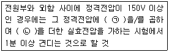
- ㉠ 2, ㉡ 1500
- ㉠ 3, ㉡ 1500
- ㉠ 2, ㉡ 1000
- ㉠ 3, ㉡ 1000
(정답률: 71%)
76. 누전경보기 수신부의 구조 기준 중 옳은 것은?
- 감도조정장치와 감도조정부는 외함의 바깥쪽에 노출되지 아니하여야 한다.
- 2급 수신부는 전원을 표시하는 장치를 설치하여야 한다.
- 전원입력측의 양선(1회선용은 1선 이상) 및 외부부하에 직접 전원을 송출하도록 구성된 회로에는 퓨즈 또는 브레이커 등을 설치 하여야 한다.
- 2급 수신부에는 전원 입력측의 회로에 단락이 생기는 경우에는 유효하게 보호되는 조치를 강구하여야 한다.
(정답률: 49%)
77. 특정소방대상물의 비상방송설비 설치의 면제 기준 중 다음 ( ) 안에 알맞은 것은?
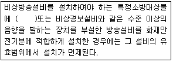
- 자동화재속보설비
- 시각경보기
- 단독경보형 감지기
- 자동화재탐지설비
(정답률: 70%)
78. 비상조명등의 일반구조 기준 중 틀린 것은?
- 상용전원전압의 130% 범위안에서는 비상조명등 내부의 온도상승이 그 기능에 지장을 주거나 위해를 발생시킬 염려가 없어야 한다.
- 사용전압은 300 V이하이어야 한다. 다만, 충전부가 노출되지 아니한 것은 300 V를 초과할 수 있다.
- 전선의 굵기가 인출선인 경우에는 단면적이 0.75mm2이상, 인출선외의 경우에는 단면적이 0.5mm2이상이어야 한다.
- 인출선의 길이는 전선인출 부분으로부터 150mm 이상이어야 한다. 다만, 인출선으로 하지 아니할 경우에는 풀어지지 아니하는 방법으로 전선을 쉽고 확실하게 부착할 수 있도록 접속단자를 설치하여야 한다.
(정답률: 55%)
79. 광전식분리형감지기의 설치기준 중 틀린 것은?
- 감지기의 수광면은 햇빛을 직접 받지 않도록 설치할 것
- 광축은 나란한 벽으로부터 0.6m 이상 이격하여 설치할 것
- 감지기의 송광부와 수광부는 설치된 뒷벽으로부터 0.5m 이내 위치에 설치할 것
- 광축의 높이는 천장 등 높이의 80% 이상일 것
(정답률: 69%)
80. 자동화재탐지설비 배선의 설치기준 중 옳은 것은?
- 감지기 사이의 회로의 배선은 교차회로 방식으로 설치하여야 한다.
- 피(P)형 수신기 및 지피(G.P.)형 수신기의 감지기 회로의 배선에 있어서 하나의 공통선에 접속할 수 있는 경계구역은 10개 이하로 설치하여야 한다.
- 자동화재탐지설비의 감지기회로의 전로저항은 80Ω 이하가 되도록 하여야 하며, 수신기의 각 회로별 종단에 설치되는 감지기에 접속되는 배선의 전앞은 감지기 정격전압의 50% 이상이어야 한다.
- 자동화재탐지설비의 배선은 다른 전선과 별도의 관ㆍ덕트ㆍ몰드 또는 풀박스 등에 설치할 것. 다만, 60V 미만의 약 전류회로에 사용하는 전선으로서 각각의 전압이 같을 때에는 그러하지 아니하다.
(정답률: 58%)